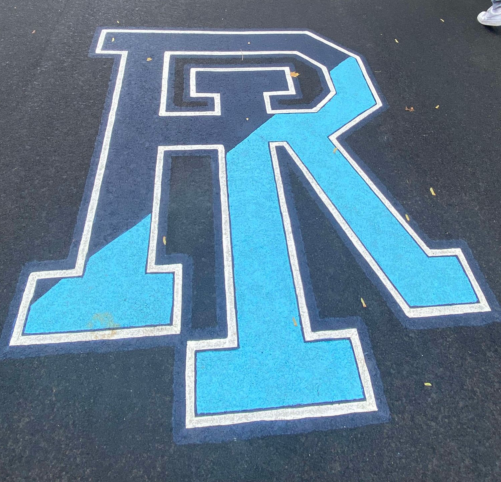

Study in the USA
Welcome to the USA! This is a guide to help you get accomodate to the United States and give you all the tips and advices you might need during your stay.
URI
URI as the University of Rhode Island is one of the few universities located in the state of Rhode Island on the east coast, the smallest state of the USA. It is close to Providence, it's capital city, and to Boston Massashussets.
Shoes/clothes sizes guide
| UK Size | US Size | EU Size |
|---|---|---|
| 7 | 7.5 | 40.5 |
| 7.5 | 8 | 41 |
| 8 | 8.5 | 42 |
| 8.5 | 9 | 42.5 |
| 9 | 9.5 | 43 |
| 9.5 | 10 | 44 |
| 10 | 10.5 | 44.5 |
| 10.5 | 11 | 45 |
| 11 | 11.5 | 46 |
| 11.5 | 12 | 46.5 |
| 12 | 12.5 | 47 |
Recipes to feel at home
Feeling homesick? We prepared some French recipes to make in America with ingredients you can find in the grocery store.
More recipes to come....
Housing and Accommodation in the USA
Many American students live on campus in dormitories, which offer a great opportunity for socializing and convenience. Dorms are typically shared spaces, with roommates often being randomly assigned, which can take some adjustment. Off-campus housing is another option, especially for graduate students or those who want more independence. Before choosing where to live, consider your budget, proximity to campus, and whether you want a more social or private living situation.
Living arrangements:
- On-campus dorms provide a community feel but might have strict rules (curfews, guests, etc.).
- Off-campus apartments or shared houses offer more freedom but come with more responsibilities (like bills and groceries).
- Consider dormitories for your first year to ease into American campus life.